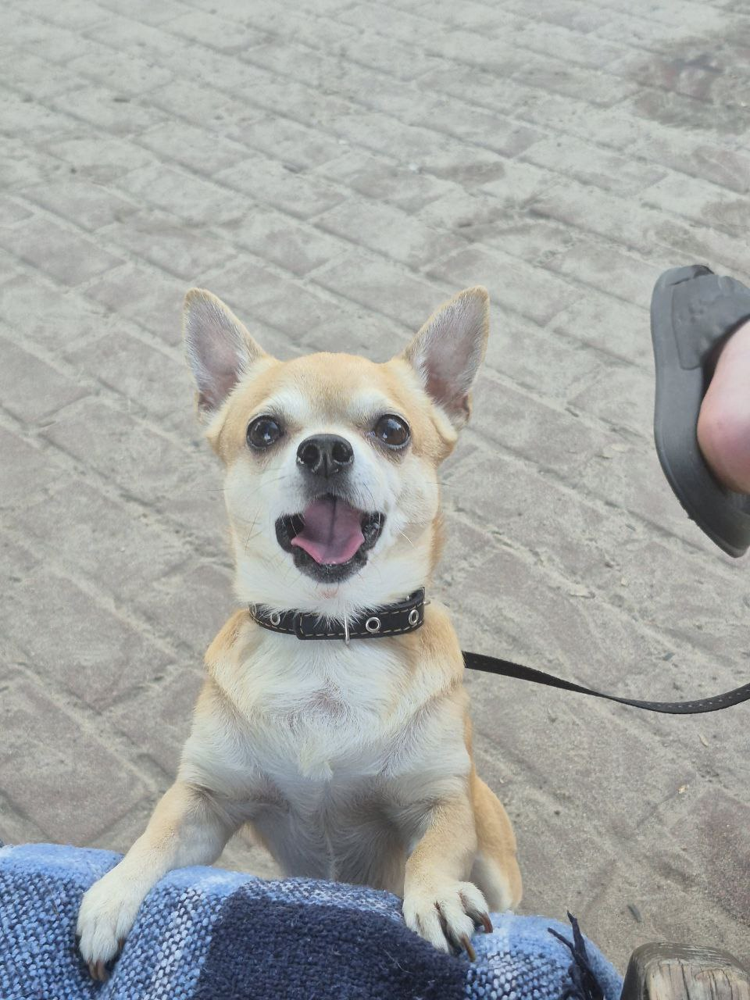
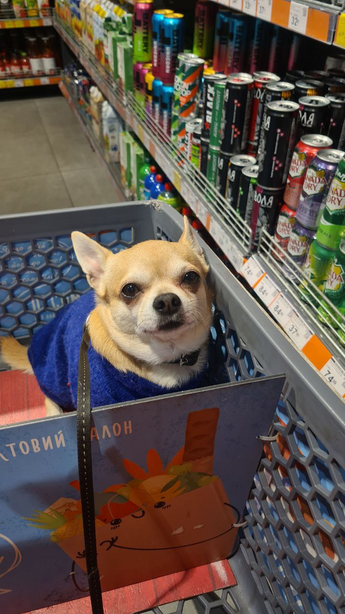
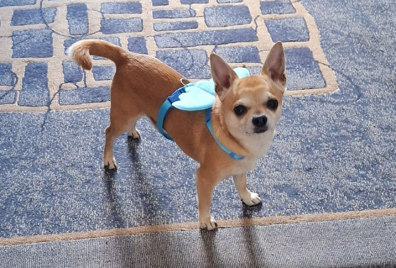
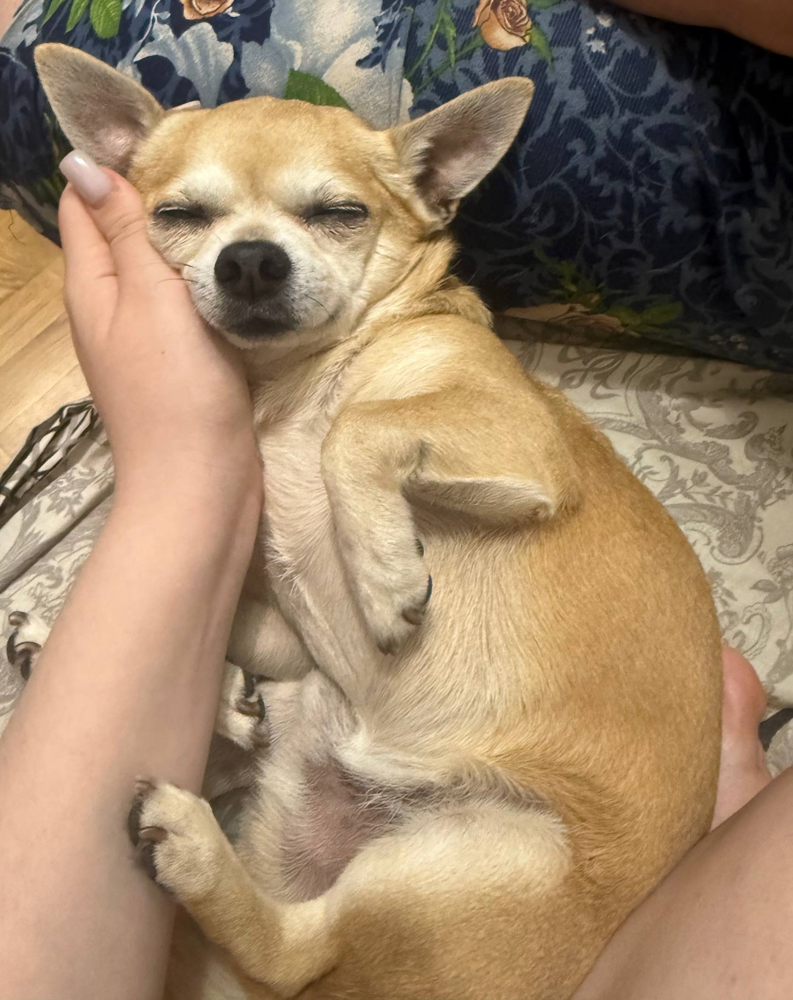
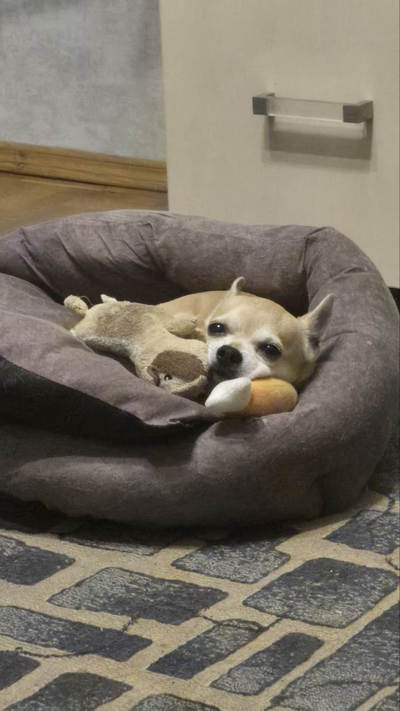
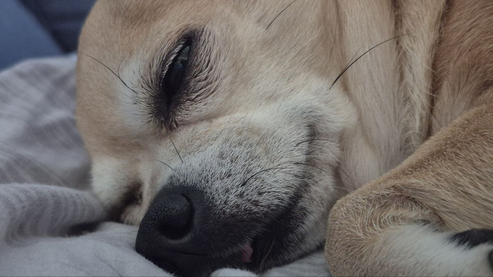
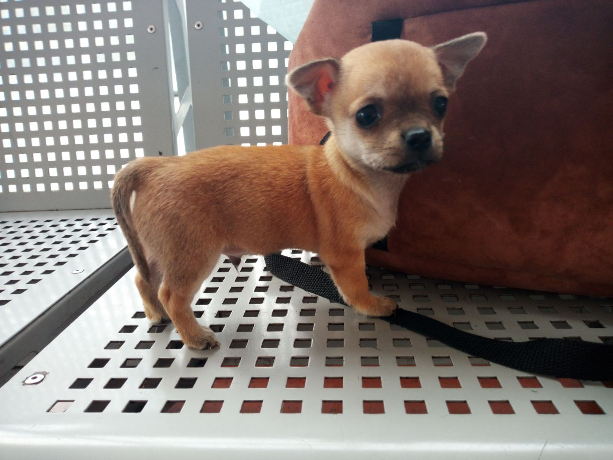
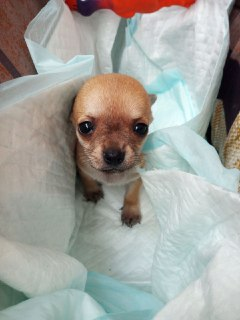

❤️ Мій улюблений Семен
Тут зібрані найтепліші моменти з життя Семена: Прогулянки, солодкий сон, спогади з дитинства Та веселі ігри.
🌿 На прогулянці
Час досліджувати світ і насолоджуватися свіжим повітрям!



💤 Тихий час
Навіть найактивнішому песику потрібен відпочинок.



🐶 Семен у дитинстві
Два маленькі фото мого пухнастого друга.


🎾 Час гратися!
А ось і Семен у своїй стихії — час веселощів!
💌 З любов’ю до Семена
Семен — це радість, вірність і безліч Щасливих моментів. Він робить моє життя Теплішим просто тим, що він поруч.